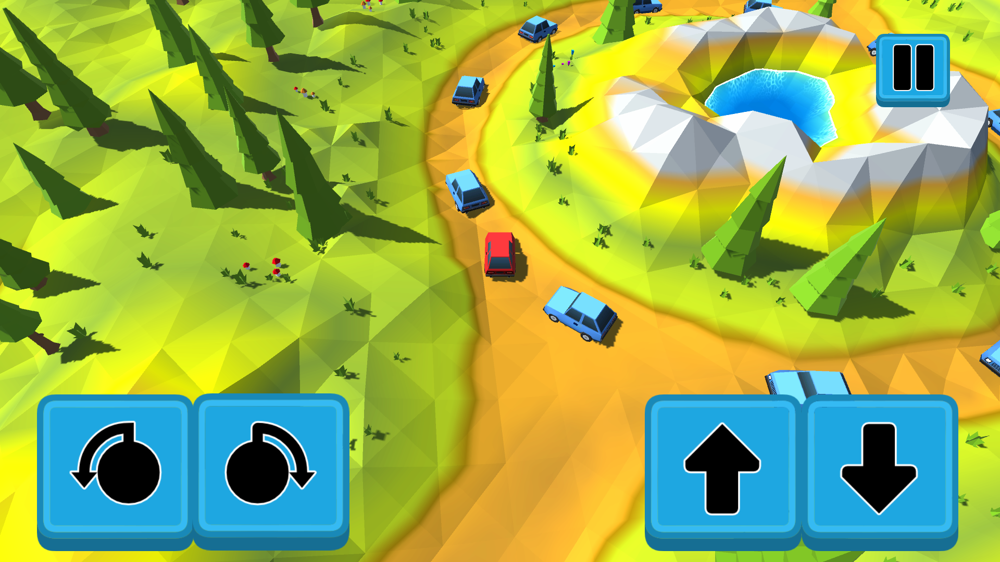

To gra, wktórej gracz ma za zadanie dojechanie do końca mapy pokonując po drodze różne przeszkody. Na swojej drodze gracz może napotkać inne pojazdy lub bramy, które poruszają się razem z ruchem gracza. W niektórych przypadkach, samochody inaczej będą reagować na ruch gracza, niż było to pierwotnie, a teren, po którym porusza się gracz, może okazać się dodatkową przeszkodą.
1 / 6
2 / 6

3 / 6

4 / 6

5 / 6
6 / 6